Mise au point de logiciels de gestion d'entreprise
RAPPORT D'ALTERNANCE
Du 16 septembre 2024 au 30 août 2025
Tuteur entreprise :
Nicolas CAZETTE
Président de Qualigest
Tutrice IUT :
Ingrid COUTURIER
Remerciements
Cette année d'alternance chez Qualigest a été particulièrement enrichissante, et je tiens à remercier toutes les personnes qui ont contribué à son bon déroulement.
Je remercie tout particulièrement Monsieur Nicolas CAZETTE, Président de Qualigest et mon tuteur en entreprise, pour la confiance qu'il m'a accordée, ainsi que pour son accueil bienveillant au sein de l'entreprise.
Je tiens également à exprimer ma reconnaissance à Madame Stéphanie RESS, cheffe de projet, pour son accompagnement technique, sa disponibilité ainsi que la qualité de ses conseils qui m'ont permis de progresser tout au long de cette année.
Je souhaite aussi remercier Madame Ingrid COUTURIER, ma tutrice à l'IUT, pour son accompagnement, ses conseils et son suivi tout au long de cette année d'alternance.
De même, je tiens à exprimer toute ma reconnaissance à l'équipe pédagogique de l'IUT, dont l'enseignement m'a fourni les bases essentielles à la réalisation de mon alternance.
Enfin, je remercie sincèrement toutes les personnes qui ont participé, de près ou de loin, à la réussite humaine et professionnelle de mon année d'alternance, et qui m'ont accompagné durant la rédaction de ce rapport.
Sommaire
Introduction
Dans un contexte industriel en perpétuelle évolution, la qualité des produits et des services occupe une place centrale dans la compétitivité des entreprises. Face à l'intensification de la concurrence, aux exigences réglementaires et aux attentes croissantes des clients, la mise en place de processus de contrôle et d'amélioration continue de la qualité est devenue un levier stratégique incontournable. Les solutions logicielles de gestion et de suivi qualité constituent aujourd'hui un atout majeur pour garantir fiabilité, traçabilité et conformité.
Qualigest, entreprise spécialisée dans les logiciels de gestion et de contrôle qualité, s'inscrit pleinement dans cette dynamique. Elle conçoit et maintient des logiciels permettant à ses clients de suivre, contrôler et améliorer leurs processus qualité.
En tant qu'alternant au sein de l'équipe de développement logiciel, j'ai eu pour mission de contribuer à la maintenance et à l'évolution de ces ERP* existants, ainsi qu'à la mise en place de nouvelles solutions mobiles.
Dans un premier temps, je présenterai Qualigest, son secteur d'activité ainsi que son organisation. Je continuerai en détaillant les différentes missions qui m'ont été confiées et exposerai mes réalisations en lien avec ces sujets. Enfin, je terminerai par une analyse personnelle des compétences et enseignements que j'ai retirés de cette expérience.
* Les mots suivis d'un astérisque sont définis dans la partie « Glossaire, abréviations et acronymes »
Présentation de l'entreprise
Historique et secteur d'activité
Fondée en 1987, Qualigest est une entreprise implantée à Montbéliard, dans le département du Doubs (25200), au sein de l'hôtel tertiaire Numerica, avenue Léon Blum.
PME* dotée du statut de Société par Actions Simplifiée (SAS), Qualigest exerce dans le domaine de la programmation informatique, et s'est spécialisée dans le développement de logiciels de gestion et de contrôle qualité adaptés à l'industrie.
Initialement centrée sur l'horlogerie et le luxe, l'entreprise a diversifié ses domaines d'intervention pour répondre aux exigences de multiples secteurs industriels tels que l'aéronautique, l'automobile, la santé et la micro-mécanique.
Qualigest se distingue par ses solutions, conçues et développées 100% en interne, depuis son site de Montbéliard. Cette organisation lui garantit une grande réactivité et une adaptation rapide aux besoins spécifiques de ses clients.
Organisation
L'organisation de Qualigest, telle que je l'ai connue pendant la majeure partie de mon année d'alternance, comprenait huit personnes (cf. Illustration 1) en dehors des stagiaires et alternants.
Bien que cette organisation ait évolué vers la fin de mon alternance, je la décris ici comme si elle était restée stable tout au long de l'année.
La direction est assurée par Monsieur Nicolas CAZETTE, président de l'entreprise.
Lionnel GUENIAT, est en charge du développement commercial.
Deux chefs de projet, Stéphanie RESS et Nicolas COURVOISIER, encadrent une équipe de quatre développeurs, Yoann DESTRAS, Edgar TAVARES, Jérémy THIEBAUD et Aurélien VANOOTEGEM.
Pour ma part, j'exerce la fonction de développeur, principalement sous la responsabilité de Stéphanie RESS.
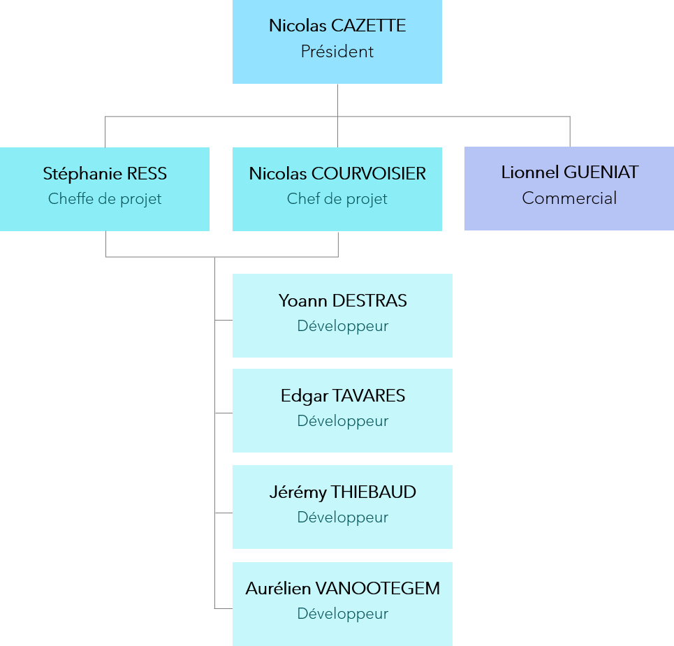
Illustration 1 : Organigramme de la société Qualigest
Cadre du projet
Présentation du sujet
Qualigest est une société spécialisée dans la conception et l'implémentation de solutions logicielles dédiées au contrôle qualité. Elle accompagne de nombreux clients en leur offrant des outils de suivi et de contrôle en temps réel, depuis la réception des matières premières jusqu'aux étapes de production.
Pour rester compétitive, Qualigest travaille à l'évolution constante de ses logiciels, en intégrant de nouvelles fonctionnalités et en assurant une maintenance réactive et efficace, gage de fidélisation et d'acquisition de nouveaux clients.
Durant mon année d'alternance, j'ai eu pour mission de participer à la maintenance et au développement de ces logiciels en effectuant la correction de bugs, en optimisant l'existant, et en développant de nouvelles fonctionnalités et applications mobiles. Mon travail a principalement concerné les logiciels MES* et Contrôle réception, tout en couvrant un certain nombre d'autres logiciels (cf. Illustration 2).
Dans ce rapport, j'ai choisi de présenter les réalisations les plus significatives menées au cours de cette année, sélectionnées en fonction de leur importance et de leur diversité technique afin d'illustrer la variété des problématiques rencontrées et des solutions mises en œuvre.
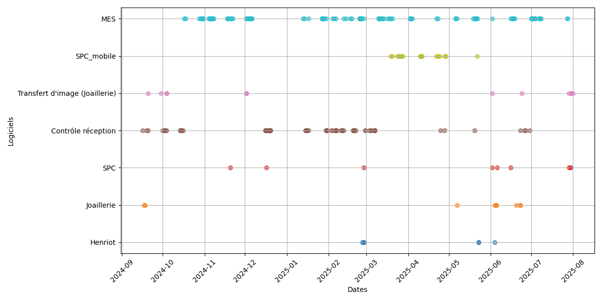
Illustration 2 : Représentation graphique du temps passé sur les différents logiciels
Organisation projet
La gestion de l'activité est assurée par un Centre de suivi de projet (cf. Illustration 3), qui regroupe la planification et le suivi des tâches de développement et de maintenance pour l'ensemble des projets, de l'équipe de développement et des chefs de projet.
Une réunion d'équipe hebdomadaire sert à répartir les sujets et les tâches pour la semaine, complétée, selon les besoins, par des réunions dédiées à certains projets.
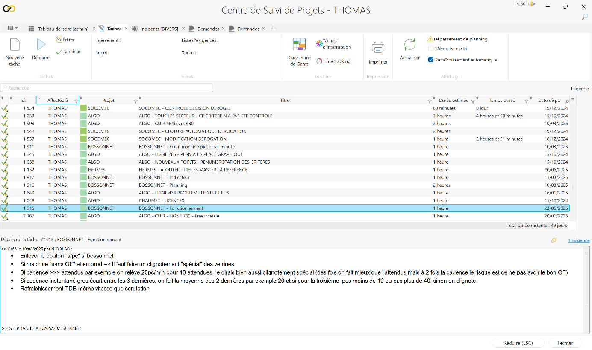
Illustration 3 : Centre de Suivi de Projets
Environnements de développement
WinDev
WinDev est un Atelier de Génie Logiciel (AGL) complet conçu par PC SOFT, permettant de développer rapidement des applications natives pour Windows.
Il offre un IDE* riche : éditeurs visuels d'analyse de données, d'UIs*, de requêtes SQL*, de rapports, d'aide, de tests automatisés, UML*, code, télémétrie, conformités RGPD*, ...
Le langage employé est le WLanguage, qui combine programmation procédurale et orientée objet, avec une syntaxe simple en français ou en anglais.
WinDev inclut HFSQL*, sa base de données intégrée disponible en mode embarqué, client/serveur, réseau, mobile et cloud. Il permet aussi l'accès à d'autres types de bases de données (Oracle, MySQL, PostgreSQL, SQL Server, etc.).
L'IDE* supporte le test et le débogage complet du projet, y compris via un mode émulation/débug.
WinDev Mobile
WinDev Mobile est un environnement de développement sous Windows, dérivé de WinDev, conçu pour créer des applications mobiles natives pour Android et iOS (iPhone/iPad). Il utilise aussi le WLanguage, tout en limitant les fonctions spécifiques à Windows.
Il offre des fonctionnalités de débogage avancé : simulation complète sur PC via émulateur, ou débogage direct sur le périphérique sans nécessiter d'installation supplémentaire.
Il supporte entièrement toutes les résolutions d'écran, DPI*, orientations (paysage/portrait) et accès aux API* propres aux plateformes (contacts, scanner, notifications…).
De plus, WinDev Mobile partage l'environnement de développement commun (éditeur de code, UI* designer, cycle d'analyse et composants) avec WinDev.
GDS (Gestionnaire De Sources)
Le GDS (Gestionnaire de Sources) est un système de versioning intégré aux environnements WinDev, WebDev et WinDev Mobile, conçu pour faciliter le développement collaboratif. Il centralise tous les éléments projets — fenêtres, classes, procédures, états, analyses, etc. — dans une base HFSQL* partagée, accessible en local ou à distance. Le GDS assure l'historique des modifications, la gestion de branches, et l'automatisation des sauvegardes.
Sujets abordés dans le projet
QUALI'MES
Présentation du logiciel
Un logiciel MES (Manufacturing Execution System) est un outil de gestion et de pilotage des opérations de production en temps réel. Il permet la collecte des données de production des machines via la scrutation ou l'importation de fichiers afin d'optimiser l'exécution des OFs (Ordre de Fabrication) et garantir une traçabilité complète de chaque opération.
QUALI'MES, le logiciel MES développé par Qualigest, assure non seulement la collecte des données issues des machines via des box* (cf. Illustration 4), leur affichage dans un tableau de bord, mais permet également de transmettre des informations vers les box en tenant compte des paramètres configurés et des calculs effectués.
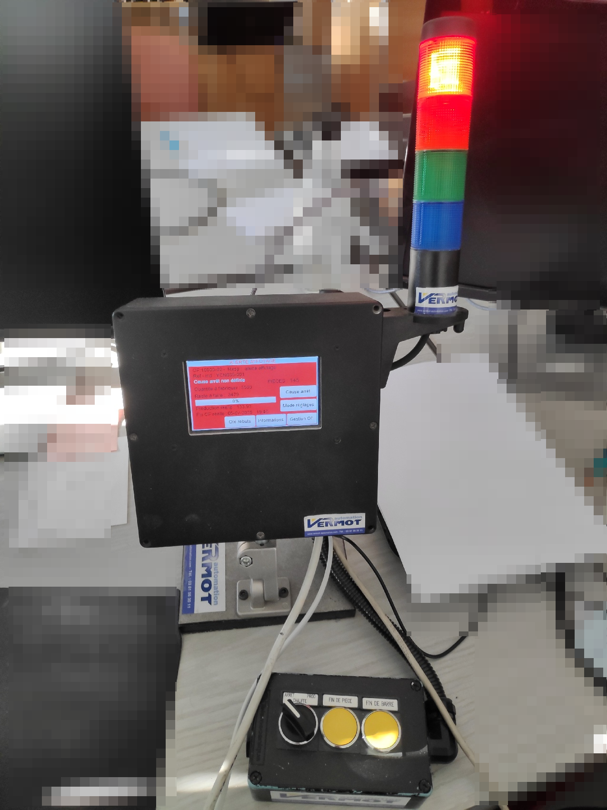
Illustration 4 : box Vermot - affichage et verrine 4 couleurs
Débug
Cahier des charges
À mon arrivée sur le projet MES, la priorité a été fixée sur la résolution de nombreux bugs avant toute évolution du logiciel. Mes premières missions ont donc porté sur le débogage.
En effet, il avait été constaté qu'un certain nombre de données sur les box du client ne correspondaient pas aux données présentes en base de données et affichées au niveau des IHMs (Interface Homme Machine).
Il m'a donc été demandé d'analyser et résoudre ces problèmes.
Réalisations
J'ai rapidement constaté des dysfonctionnements importants dans la base de données, notamment :
- L'activation simultanée de plusieurs opérations sur une même machine ;
- Des doublons d'opérations sur différentes machines ;
- Des incohérences entre l'état des opérations dans le système et la réalité observée chez le client ;
- Des calculs erronés au niveau des dates des OFs.
Certaines de ces erreurs résultaient d'usages imprévus du MES, comme la clôture puis la réouverture d'opérations ou encore la migration d'une opération d'une machine à une autre sans mise à jour du numéro d'OF associé.
Dans ce contexte, mes interventions initiales ont consisté à identifier et corriger ces anomalies en passant au crible toutes les machines et opérations pour repérer les incohérences, afin de remonter jusqu'à la partie du code à l'origine des problèmes.
Pour optimiser ce processus fastidieux nécessitant un recensement manuel, j'ai alors pris l'initiative de développer une page de débogage automatisé (cf. Illustration 5). Cette nouvelle interface a permis de vérifier en temps réel l'intégralité des opérations, d'identifier rapidement les erreurs existantes, et de faciliter le suivi des corrections. Elle a ensuite été intégrée au logiciel MES puis enrichie progressivement pour accompagner l'intégration de nouvelles fonctionnalités.
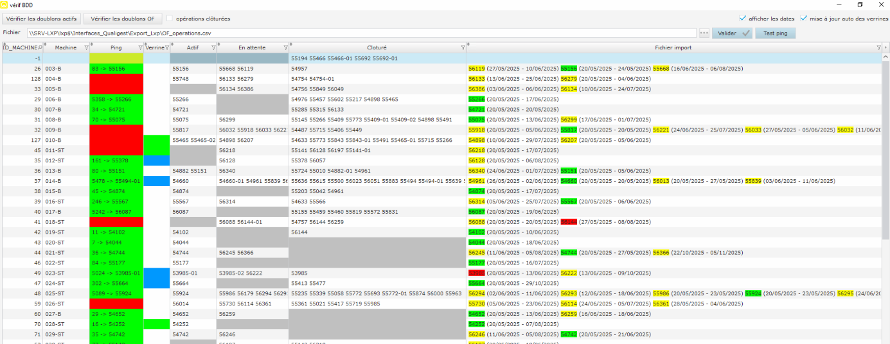
Illustration 5 : page de débogage automatisé
Clignotement verrine
Cahier des charges
Mettre en œuvre un système de détection de nouvelles alertes machines, ainsi que leur affichage simultané sur la verrine* de la box* machine et sur l'interface logicielle, au niveau du tableau de bord et de la page de débogage.
La verrine installée sur la machine comporte quatre lumières (1 verte, 1 rouge, 1 bleu, 1 jaune) pouvant s'allumer et clignoter indépendamment les unes des autres. Aujourd'hui, elle est utilisée pour signaler certains états de fonctionnement tel que le fait que la machine soit active (lumière verte fixe), arrêtée (lumière rouge fixe) ou que la cadence de production est trop faible ou trop élevée (lumière verte clignotante).
Les nouvelles alertes à détecter sont :
- Pas d'OF actif ⇒ donné par la box
- Alerte affutage ⇒ donné par la box
- cadence de production trop faible ou trop élevée avec un facteur paramétrable
- Variation trop grande de la vitesse de production
Ces nouvelles alertes doivent être signalées par un clignotement bleu au niveau de la verrine, du tableau de bord et de la page de débug. Toutefois, le clignotement bleu ne doit être pris en compte que lorsque les états suivants de la machine sont sélectionnés :
- Pas d'OF actif
- Machine en chauffe
- Machine en production
- Machine à l'arrêt
- Machine en cours de réglage
- Machine en cours de ravitaillement
- Autre
Réalisations
Pour ce développement, j'ai commencé par analyser le format des données émises par les box afin d'identifier et décoder les informations contenues dans une trame. Lors de la scrutation, des sockets* sont créées pour communiquer individuellement avec chaque box, ce qui me permet d'extraire précisément les octets ciblés grâce à la structure de la trame, puis de stocker les données en base si besoin.
Une fois les informations techniques analysées, j'ai développé plusieurs fonctionnalités visant à améliorer l'intégration des signaux lumineux dans le système.
Tout d'abord, j'ai procédé à un ajustement de la base de données : auparavant, le clignotement vert était uniquement géré localement par la box, sans répercussion en base ni sur l'interface utilisateur. Pour corriger cela, j'ai ajouté une colonne dans la table des machines permettant de stocker l'état de clignotement (0 pour aucun, 1 pour vert, 2 pour bleu).
En parallèle, j'ai conçu un écran dédié au paramétrage de ces états (cf. Illustration 6) et développé les fonctions de calcul associées. Concernant l'alerte de "variation trop grande de la vitesse de production", le cahier des charges initial prévoyait une comparaison sur 3 valeurs, mais j'ai proposé une solution plus flexible s'appuyant sur les n dernières valeurs.
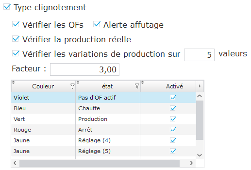
Illustration 6 : écran de paramétrage des états
J'ai également modifié le tableau de bord (cf. Illustration 7) pour intégrer ces nouvelles fonctionnalités. La complexité de ce développement réside notamment dans la prise en compte des contraintes suivantes :
- La mise à jour automatique toutes les minutes selon les données présentes en base via une requête asynchrone afin de limiter les ralentissements, en particulier perceptibles lors du clignotement.
- la gestion du statut de chaque box via un ping, opération coûteuse en temps et nécessitant l'utilisation du multithreading
- L'affichage en temps réel du clignotement.
Par ailleurs, j'ai aussi modifié la page de débug pour intégrer ces nouveaux paramètres, avec les mêmes contraintes techniques que sur le tableau de bord.
J'ai terminé en mettant en place l'envoi du signal de clignotement bleu à la box, pour que l'affichage corresponde bien aux réglages faits dans l'IHM*.
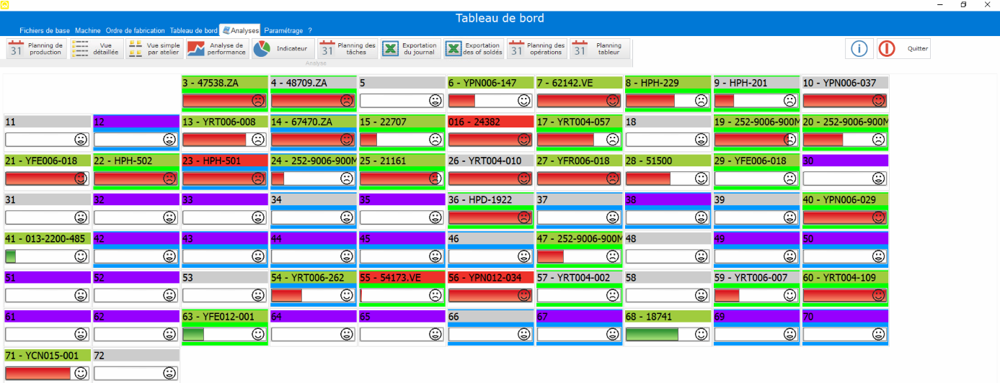
Illustration 7 : écran Tableau de bord
Récupération mongoDB
Cahier des charges
Le client possède un outil externe lui permettant d'enregistrer les paramètres machine (Nombre de pièces, température du moteur, température du codeur et état de la machine) au sein d'une base de données MongoDb.
Le client souhaite que ces données soient visibles au sein du logiciel QUALI'MES.
Réalisations
Un aspect important de mon travail a été la récupération des données depuis une base MongoDB gérée par le client.
Dans un premier temps j'ai développé la fonction de récupération des données contenues dans une base MongoDb située chez le client. Lors des phases de test et de développement j'ai dû passer par un VPN pour pouvoir accéder directement à la base de données du client. J'ai établi une connexion à la base et récupéré les données nécessaires au format JSON.
Pour enregistrer les données dans la base du logiciel MES, j'ai créé plusieurs tables (cf. Illustration 8). Les tables « opérations » et « machines » existaient déjà et j'ai ajouté les tables operation_param_machine, valeurs_param_machine, machines_parametre_machine et parametre_machine, ainsi que les liens associés.
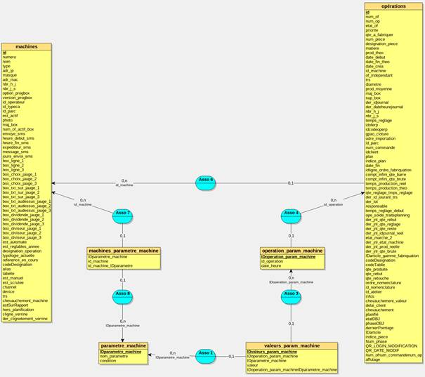
Illustration 8 : Tables pour intégration des données en provenance de MongoDb
Il est à noter que la table parametre_machine permet de paramétrer les requêtes directement en base pour plus d'adaptabilité, ce qui permet de ne pas avoir à refaire un exécutable à chaque changement et offre la possibilité de l'utiliser pour des clients futurs sans faire de modifications dans le code.
Afin de pouvoir renseigner cette table parametre_machine, j'ai créé une interface (cf. Illustration 9) permettant de gérer les informations.
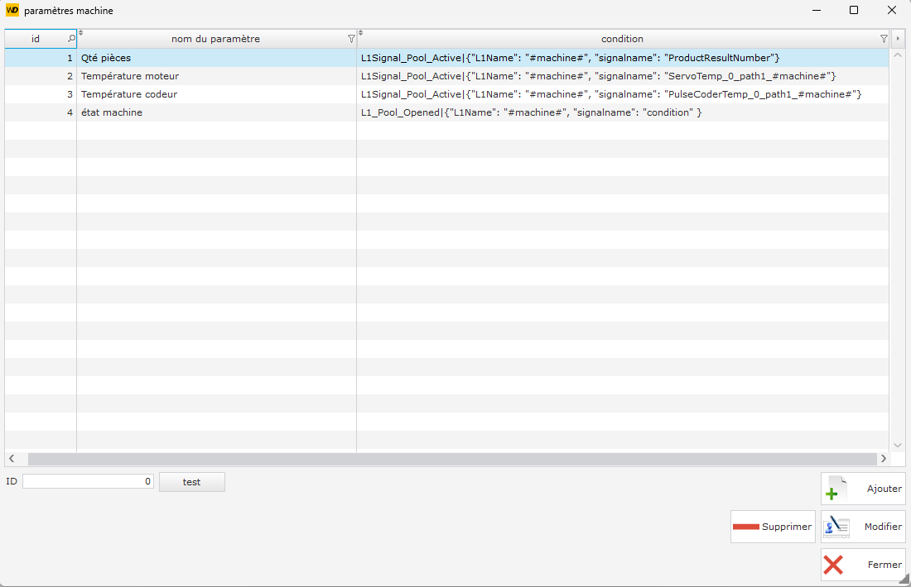
Illustration 9 : paramètres machine
J'ai aussi créé une page de recherche des informations liées aux valeurs des paramètres machines (cf. Illustration 10) avec la possibilité de filtrer les données sur les dates, le type d'information, la machine et l'OF.
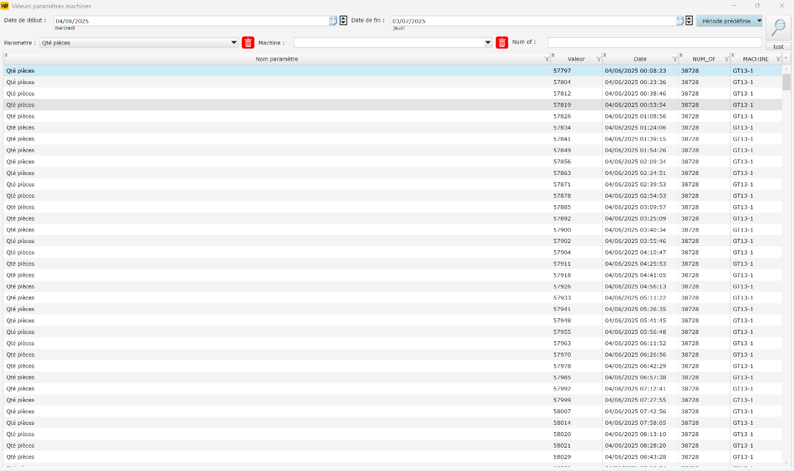
Illustration 10 : écran de recherche des valeurs de paramètres machines
Enfin, j'ai intégré à l'écran de planning des contrôles (cf. Illustration 11) le choix du paramètre machine à afficher et l'affichage des données liées à ce paramètre machine.
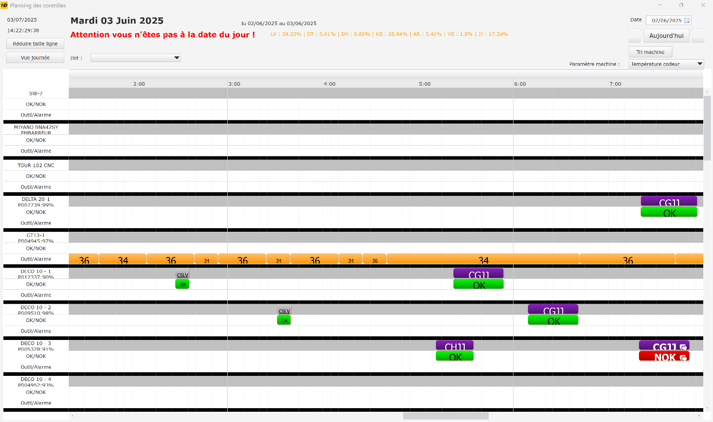
Illustration 11 : écran Planning des contrôles
Une fois les développements effectués, j'ai présenté les résultats au client puis j'ai installé cette nouvelle version en production.
SPC_mobile
Cahier des charges
Afin de faciliter la collecte de mesures de contrôles dans l'atelier et d'éviter de devoir regagner son poste à chaque fois, le client souhaite disposer d'une solution permettant d'enregistrer les données sur place et de les transmettre ultérieurement au logiciel SPC (cf. section SPC). Le choix du support de collecte de données s'est porté sur un smartphone Android.
Réalisations
J'ai développé une application mobile en partant de zéro avec WinDev Mobile. J'ai conçu différents écrans (cf. Illustration 12) qui permettent de trier, de sélectionner un contrôle et d'ajouter des mesures pour chaque attribut et critère. J'ai aussi implémenté une fonction qui envoie les mesures à la base de données du SPC, où elles sont ensuite intégrées dans les tables via une tâche planifiée. Par rapport au besoin initial, j'ai ajouté la possibilité de saisir des mesures sur une partie seulement du contrôle.
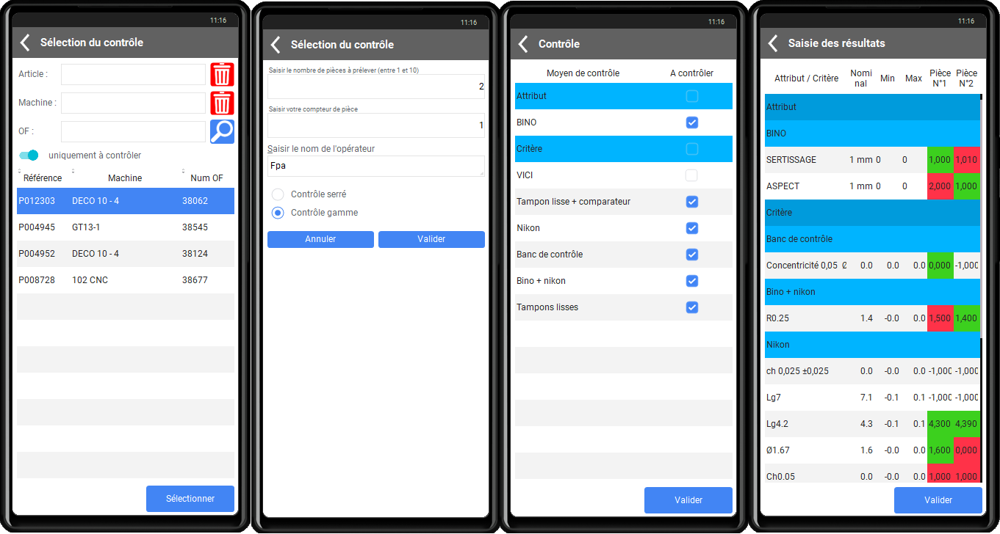
Illustration 12: écrans SPC_mobile
Durant le développement, j'ai rencontré des différences significatives entre le simulateur WinDev et les appareils Android réels, ce qui m'a contraint à réaliser de nombreux ajustements et corrections.
Les principales difficultés que j'ai rencontrées sont liées au positionnement de la saisie. En effet, le simulateur ne reproduisant pas fidèlement certains comportements natifs d'Android tels que le focus des champs ou la gestion du clavier, j'ai dû effectuer des tests systématiques sur des appareils physiques pour garantir la fiabilité de l'application.
Transfert d'image (Joaillerie)
Cahier des charges
Le client souhaite pouvoir transférer facilement des images d'un téléphone IOS vers le logiciel Joaillerie.
Réalisations
Pour pouvoir transférer des images d'un téléphone IOS vers le logiciel Joaillerie, j'ai d'abord développé une nouvelle fenêtre dans le logiciel qui permet à l'utilisateur de demander à récupérer une image depuis son smartphone, puis une application mobile permettant la sélection et l'envoi de cette image.
Lorsque l'utilisateur demande à intégrer une photo, un QR code est généré. Lorsque l'utilisateur scanne ce QR code avec son smartphone, la galerie d'image s'ouvre afin de sélectionner la photo qui sera envoyée via un protocole HTTP*. L'utilisateur peut modifier le nom de l'image et indique où il souhaite l'enregistrer (cf. Illustration 13).
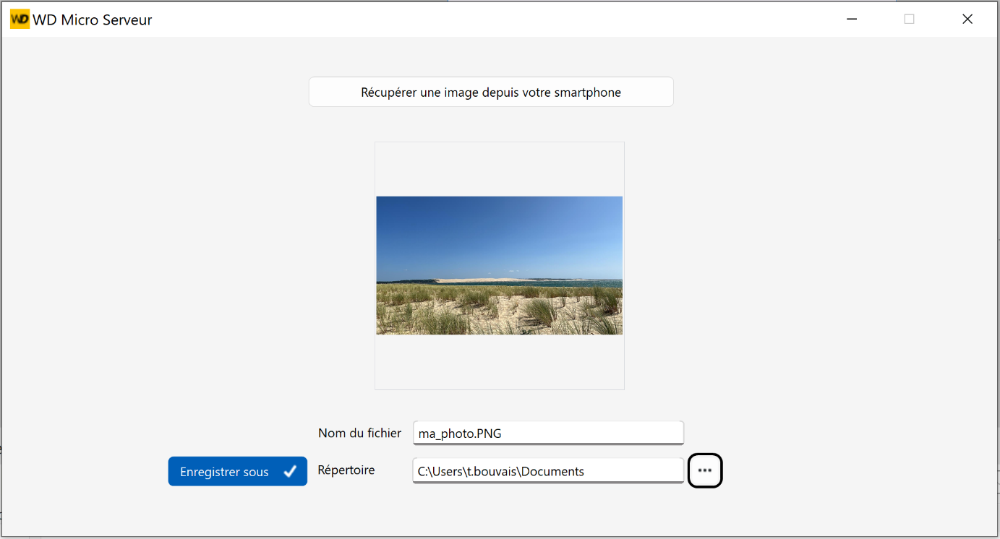
Illustration 13: écran d'import d'image dans le logiciel Joaillerie
Une fois l'application mobile créée, il est nécessaire de la mettre sur l'Apple Store, ce qui nécessite une démarche complexe :
- Génération d'un projet Xcode* via WinDev
- Création d'un compte développeur Apple payant
- Génération d'un certificat d'authentification Apple permettant de signer numériquement l'application afin qu'Apple puisse vérifier son authenticité et garantir qu'elle respecte leurs conditions de sécurité.
- Compilation du projet Xcode sur un PC Apple.
J'ai rencontré de nombreuses difficultés à cette étape notamment :
- Installation d'une ancienne version de Xcode sur un MAC trop âgé, qui ne permettait pas de compiler le projet
- Recherche d'un MAC plus récent avec version de Xcode plus récente, ce qui a permis de compiler. Toutefois, cette compilation n'a fonctionné que sur l'émulateur, pas sur le téléphone.
- Recherche d'un nouveau MAC encore plus récent permettant d'installer une version de Xcode qui a enfin permis de générer une application fonctionnant à la fois sur l'émulateur et sur un téléphone.
- Test du projet compilé sur un émulateur et un Iphone
- Première soumission de l'application à Apple via Xcode pour vérification automatique de la conformité de l'application. Cela génère un build de l'application dans le compte
- Renseignement du formulaire contenant les informations nécessaires à sa présentation sur l'Apple Store (nom et description de l'application, nom de la société, captures d'écran, informations liées à la confidentialité, build de l'application, …)
- Seconde soumission de l'application à Apple pour vérification approfondie. Ce processus peut prendre plusieurs jours à plusieurs semaines (en attente de validation).
Le processus de développement d'une application IOS étant complexe et n'ayant jamais été réalisée au sein de Qualigest, j'ai écrit une documentation à destination des autres développeurs expliquant les différentes étapes à suivre pour générer un projet IOS.
Contrôle réception
Présentation du logiciel
L'application « Contrôle réception » permet d'assurer le suivi et la traçabilité des opérations de réception de marchandises. Elle permet le contrôle qualitatif et quantitatif des produits livrés en comparant les références prévues aux éléments effectivement reçus. Les utilisateurs peuvent enregistrer les écarts, signaler les non-conformités, générer des rapports d'inspection et archiver les contrôles effectués.
Cahier des charges
Correction de l'état « Procédure de contrôle (PC) » qui présente des problèmes de pagination.
Réalisations
Lorsque l'on m'a demandé de corriger l'état « Procédure de contrôle (PC) » qui présentait des problèmes de pagination (cf. Illustration 14), j'ai d'abord essayé de corriger le code existant. Toutefois, après plusieurs essais infructueux j'ai décidé de refaire complètement le développement de cet état, ce qui m'a permis d'arriver au résultat attendu (cf. Illustration 15).
Bien que cela n'ait pas été initialement prévu, la refonte complète de cet état m'a permis d'apprendre à en concevoir un de A à Z, alors que jusque-là je n'avais travaillé que sur de légères évolutions d'états déjà existants.
Avant - Problèmes de pagination
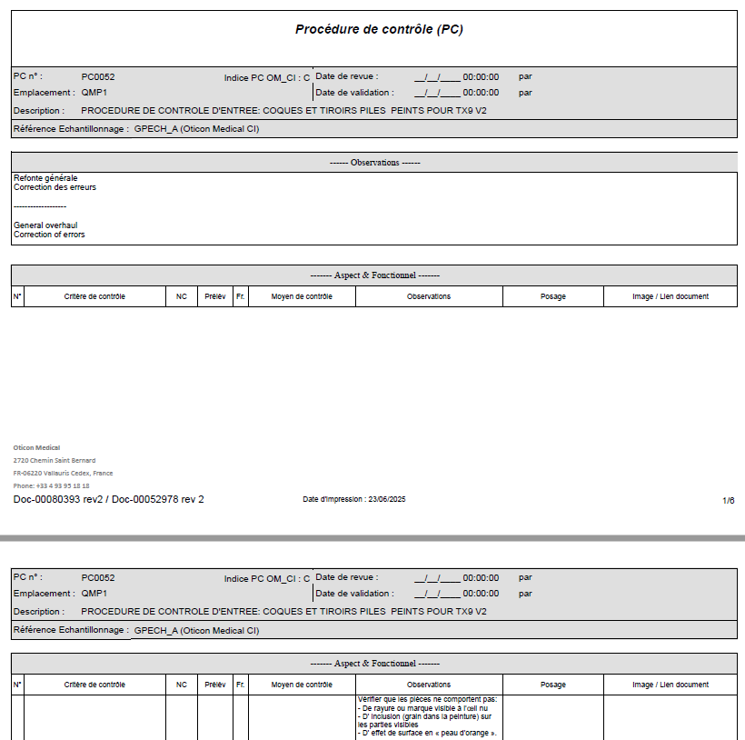
Illustration 14 : état d'origine présentant des problèmes de pagination
Après - Pagination corrigée
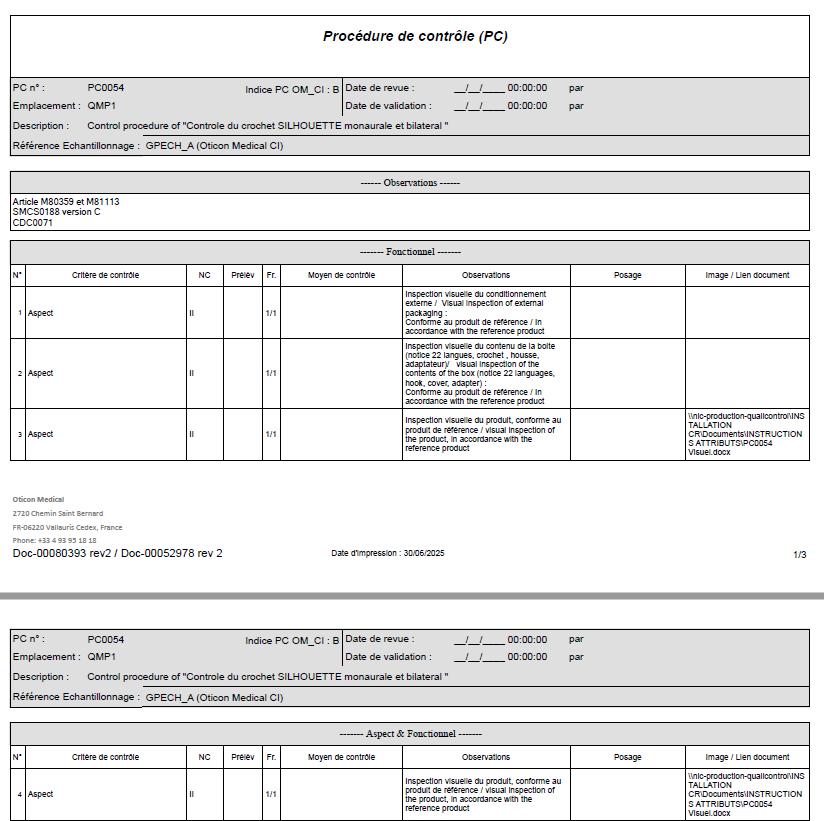
Illustration 15 : état corrigé ne présentant plus de problèmes de pagination
SPC
Présentation du logiciel
Le logiciel SPC (Statistical Process Control) vise à assurer le suivi et le contrôle des différents processus de production. Il permet de surveiller en temps réel les indicateurs de qualité concernant les matières premières, les produits en cours de fabrication et les produits finis, ainsi que les paramètres de fabrication. Il s'appuie sur l'utilisation d'outils statistiques afin de détecter de manière précoce les écarts par rapport aux niveaux de qualité attendus.
Cahier des charges
Intégrer au logiciel SPC la fonctionnalité existante dans le logiciel « Contrôle réception » permettant de rechercher dans l'ensemble de la base de données les chemins de fichiers enregistrés et les modifier.
Réalisations
Lorsque j'ai commencé à étudier la fonctionnalité existante à intégrer à SPC, je me suis rendu compte que Le code initial, chargé de récupérer et modifier les chemins, comportait des boucles écrites en dur pour chaque table ou rubrique pouvant contenir un chemin.
Comme il s'agissait d'un autre logiciel, la base de données utilisée différait de l'existante. Plutôt que de reproduire le même schéma en adaptant manuellement chaque table, j'ai choisi de repenser entièrement la structure du code.
La nouvelle version permet de définir une seule fois, dans un tableau, la liste des tables et rubriques concernées. Le reste du traitement est automatisé, offrant ainsi une meilleure flexibilité en cas de modification de la base et facilitant l'intégration dans d'autres logiciels si nécessaire. Lors de cette refonte j'ai également ajouté un filtre par table (cf. Illustration 16), fonctionnalité absente de l'ancienne version.
Le principal compromis concerne cependant les performances. En effet, la liste des tables et colonnes n'étant pas connue à l'avance, j'ai utilisé des indirections (variables générées dynamiquement à partir de chaînes de caractères), ce qui entraîne une exécution plus lente. Cependant, cette fonctionnalité n'étant pas utilisée dans un contexte temps réel, ce compromis sur les performances est tout à fait acceptable au regard des avantages qu'elle procure.
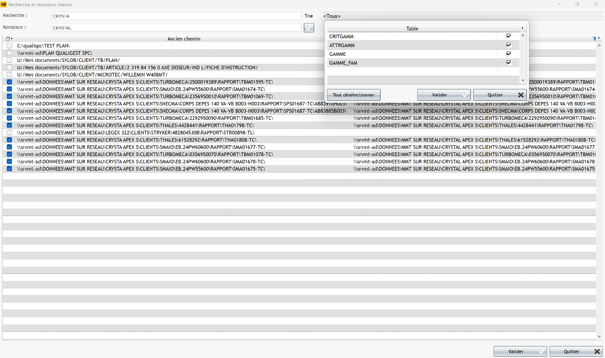
Illustration 16 : écran de recherche et modification des chemins
Joaillerie
Cahier des charges
Pour utiliser le logiciel Joaillerie, une licence est requise. La gestion des licences est assurée dans la base de données du logiciel via un système de verrouillage et de déverrouillage. Le nombre de licences simultanées dont dispose le client est limité.
Le logiciel intègre un système de chargement/déchargement permettant de rapatrier une partie de la base de données en local afin de fonctionner en mode portable, sans connexion.
Lorsqu'un utilisateur active le mode « hors connexion », la licence est temporairement attribuée à son poste.
À la sortie de ce mode, la licence doit être restituée et redevient disponible.
Réalisations
Au niveau de la fonctionnalité de chargement/déchargement des informations de la base de données, j'ai ajouté la gestion de l'attribution de la clé de licence en local et sa restitution (cf. Illustration 17). J'ai aussi mis en place un bouton permettant d'attribuer une clé de licence en local en mode hors connexion sans avoir à exécuter le chargement/déchargement des données.
La gestion des licences constitue un pilier essentiel de la sécurité logicielle.
Ce mécanisme doit fonctionner de manière fiable, sans interruption, et éviter toute attribution erronée de licence au client ou tout blocage injustifié.
Le fait que ce processus critique m'ait été confié, témoigne de la confiance portée à mes compétences et à la qualité de mon travail.
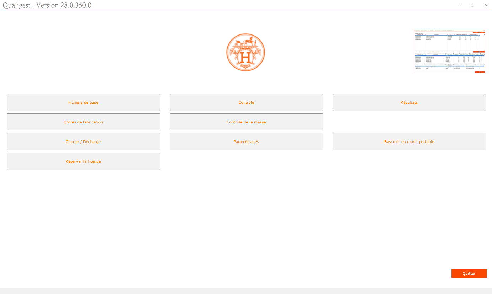
Illustration 17 : écran principal du logiciel Joaillerie
Optimisations
Optimisation initiale à la demande du client
Le client s'étant plaint de lenteurs, il m'a été demandé d'optimiser la fenêtre du planning de production standard, qui est beaucoup trop lente.
Pour réaliser cette optimisation, j'ai commencé à chercher dans WinDev quels outils étaient à ma disposition. J'ai trouvé l'analyseur de performances qui permet de répertorier le nombre d'appels et le temps d'exécution moyen de chaque fonction.
J'ai donc utilisé l'analyseur de performance pour détecter quelles étaient les fonctions les plus chronophages lors de l'affichage de la fenêtre du planning de production standard. J'ai obtenu 4 fonctions qui à elles seules représentaient 85% du temps d'exécution total (cf. Illustration 18), sur lesquelles je me suis donc focalisé.
En analysant le code de ces fonctions j'ai relevé les problématiques suivantes :
- Boucle sur la lecture en base de paramètres plusieurs milliers de fois
→ J'effectue la lecture des paramètres une seule fois, j'enregistre leur valeur, et je remets cette valeur à jour uniquement lorsque cela est nécessaire. - Appels multiples d'initialisations à tort (Combos)
- Boucles sur des lectures uniques
→ Remplacé par des requêtes SQL
Grâce à l'optimisation de ces fonctions, le temps d'affichage de cette fenêtre a été divisé par 4 (cf. Illustration 19).
Avant optimisation
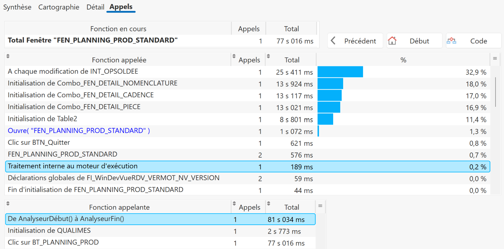
Illustration 18 : temps d'exécution de l'affichage de la fenêtre du planning de production standard avant optimisation
Après optimisation - ÷4
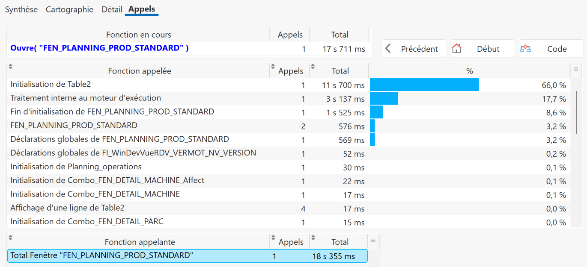
Illustration 19 : temps d'exécution de l'affichage de la fenêtre du planning de production standard après optimisation
Initiatives personnelles d'optimisations
Suite à la première optimisation réalisée (cf. paragraphe précédent), chaque fois que j'ai constaté des lenteurs dans les logiciels, j'ai pris l'initiative d'appliquer le même processus d'analyse afin d'en identifier les causes et, si possible, d'améliorer le temps d'exécution.
J'ai, entre autres, optimisé l'affichage d'un planning du logiciel MES pour lequel j'ai divisé les temps d'exécution par 3 (cf. Illustration 20 et Illustration 21), ainsi que la recherche des tests labo dans le logiciel Contrôle réception dont le temps d'exécution a été divisé par 10 (cf. Illustration 22 et Illustration 23).
Pour optimiser la recherche des tests labo, j'ai procédé à une réécriture complète du code chargé de remplir le tableau à afficher.
Le code initial appelait les mêmes fonctions pour renseigner chaque ligne du tableau en utilisant une fonction native WinDev de lecture de la base de données. J'ai remplacé ce fonctionnement par une requête SQL unique qui me renvoie plus rapidement l'ensemble des informations nécessaires.
De plus, j'ai aussi supprimé les indirections (variables générées dynamiquement à partir de chaînes de caractères) et les ai remplacées par un tableau de champs.
Planning MES - Avant (÷3)
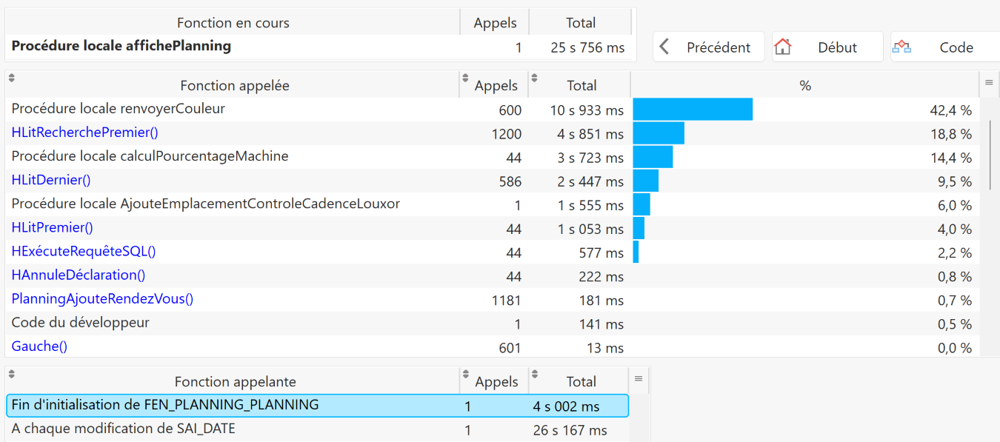
Illustration 20 : temps d'exécution de l'affichage planning logiciel MES avant optimisation
Planning MES - Après
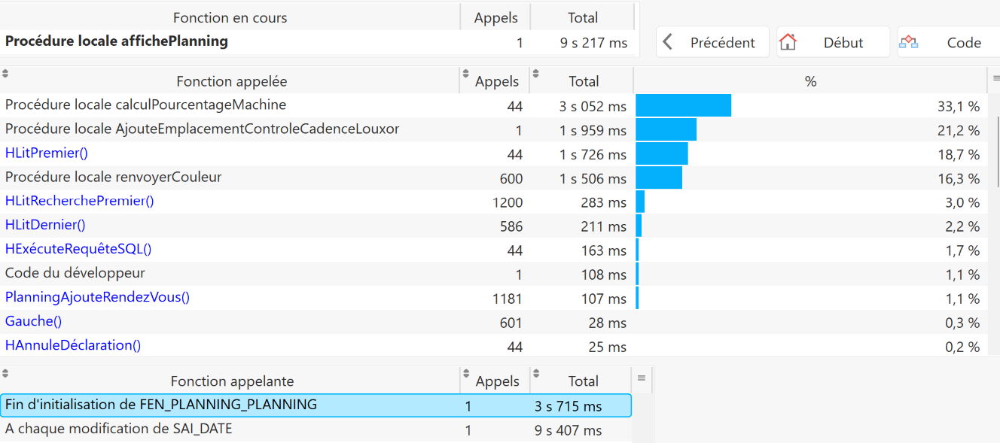
Illustration 21 : temps d'exécution de l'affichage planning logiciel MES après optimisation
Tests labo - Avant (÷10)
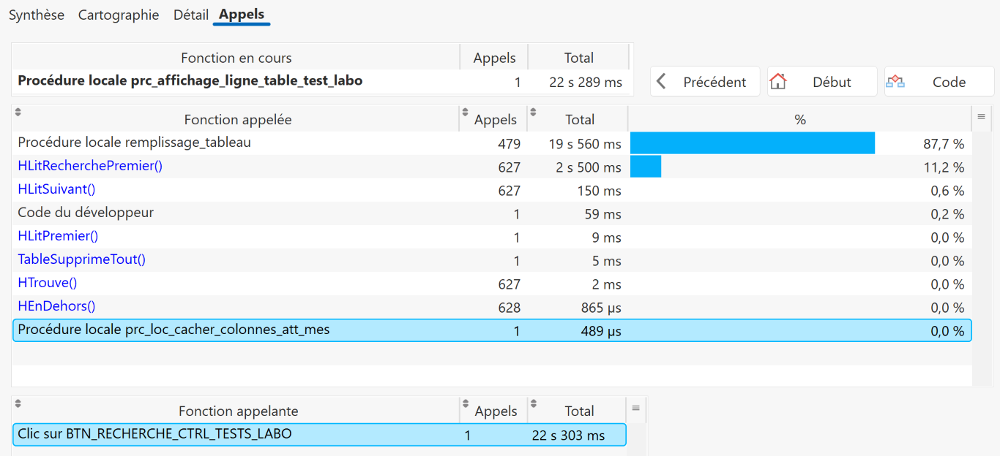
Illustration 22 : temps d'exécution de la recherche des tests labo dans le logiciel Contrôle réception avant optimisation
Tests labo - Après
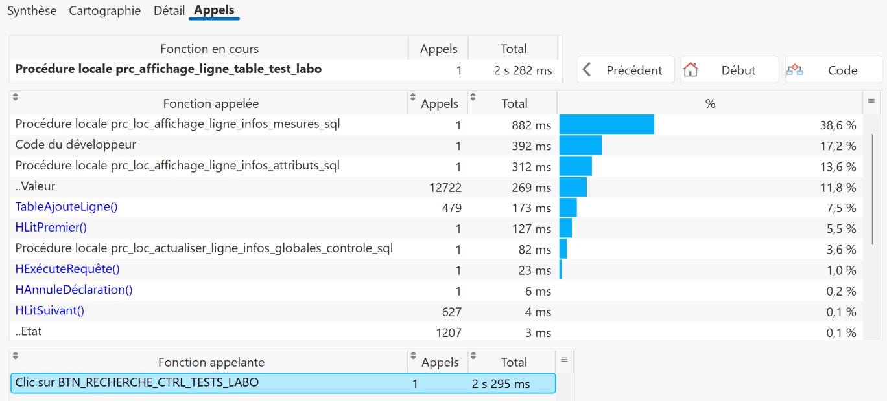
Illustration 23 : temps d'exécution de la recherche des tests labo dans le logiciel Contrôle réception après optimisation
Analyse de l'alternance
Bilan technique et humain
Commencer mon alternance par une phase de débug m'a beaucoup aidé à m'approprier les différents logiciels et à cerner leurs spécificités. J'ai pris conscience de l'importance de produire un code fiable, optimisé, clair et maintenable dans le temps. Cette expérience m'a également appris à envisager dès la conception l'ensemble des cas possibles, et pas uniquement les scénarios principaux.
Progressivement, j'ai pris l'initiative d'aller au-delà des missions confiées, en optimisant plusieurs fonctionnalités et en restructurant certaines parties du code afin d'en améliorer la maintenabilité et la réutilisabilité.
Avec le recul, si je devais refaire cette alternance, j'essaierais de donner davantage de retours sur mon travail, d'exposer plus systématiquement les difficultés rencontrées et les solutions mises en œuvre, afin de mieux mettre en valeur mes contributions et de faciliter le suivi de mon travail.
Sur le plan humain, j'ai progressé dans ma manière de communiquer avec l'équipe. Même si mes échanges étaient parfois hésitants au début, j'ai gagné en assurance au fil des mois. Ce progrès reste toutefois un axe d'amélioration que je compte poursuivre dans mes futures expériences professionnelles.
Savoirs et savoir-faire
L'alternance a constitué pour moi une opportunité de renforcer mes connaissances acquises à l'IUT, notamment en bases de données. J'ai pu revoir et approfondir certains aspects liés à l'architecture des bases et perfectionner mon usage du langage SQL, en travaillant directement sur des problématiques concrètes et variées.
Par ailleurs, j'ai découvert l'environnement WinDev, qui m'a ouvert à de nouvelles compétences. J'ai ainsi appris à utiliser le langage WLanguage pour développer des applications, à concevoir des interfaces graphiques (IHM) adaptées aux besoins fonctionnels, et utiliser plusieurs outils intégrés : le système de versionnement GDS, les outils de débogage, ainsi que le centre de suivi de projet.
Compétences et apprentissages critiques
Remarque préalable : n'ayant pas validé la compétence 3 « Administrer des systèmes informatiques communicants complexes » en deuxième année et celle-ci étant absente du programme de troisième année, je l'aborde aussi ici.
Pour une description détaillée des compétences et Apprentissages Critiques (AC) développés ci-dessous, se référer aux annexes I à IV.
Compétence 3 - Administrer des systèmes informatiques communicants complexes
Dans le cadre de mon alternance, j'ai pu développer mes compétences en conception et développement d'applications communicantes.
J'ai pu mettre en pratique l'apprentissage critique lié à l'utilisation de serveurs et services réseaux virtualisés, sur le projet SPC_mobile où j'ai implémenté une fonctionnalité permettant l'envoi de mesures depuis un smartphone vers la base de données du logiciel SPC ainsi que sur le projet Transfert d'image, où j'ai mis en place l'envoi, via le protocole HTTP, d'une image depuis un smartphone vers une application WinDev.
J'ai également mis en pratique l'apprentissage critique lié à l'utilisation de serveurs et de services réseaux virtualisés. Lors du développement du clignotement de la verrine, j'ai analysé et décodé les trames émises par les box, avant d'établir une communication par sockets pour échanger avec chaque périphérique. Cette approche m'a permis de maîtriser les mécanismes de base de la communication réseau, en décodant les informations et en assurant une transmission fiable des données. Par ailleurs, j'ai accédé à une base de données MongoDB distante en utilisant un VPN, ce qui a renforcé ma compréhension des infrastructures réseau sécurisées et de l'accès à des services virtualisés.
Enfin, j'ai concrétisé l'apprentissage critique relatif à la sécurisation des services et des données en développant la gestion des licences du logiciel Joaillerie. J'ai conçu une fonctionnalité permettant d'attribuer et de restituer les clés de licence, mesure indispensable pour contrôler l'accès au logiciel et éviter les usages frauduleux. Cette mission m'a sensibilisé aux bonnes pratiques en matière de sécurité logicielle, notamment la nécessité de protéger les ressources contre les accès non autorisés.
Compétence 4 - Gérer des données de l'information
Les apprentissages critiques « Capturer et stocker des ensembles volumineux et complexes de données hétérogènes » et « Préparer et extraire les données pour l'exploitation » ont été au cœur de l'ensemble des projets que j'ai menés durant mon alternance, me permettant de développer une expertise solide dans la collecte, le traitement et l'exploitation de données variées et complexes.
En effet, en plus de l'hétérogénéité des données elles-mêmes (booléens, entiers, réels, chaînes de caractères, dates, fichiers, …), j'ai traité des données sous différents formats (csv, Json, trames binaires, …).
Une fois les données extraites et préparées, je les enregistrais en base de données pour qu'elles puissent être réutilisées par les différents logiciels, notamment dans une optique de gestion et de contrôle qualité. Cette étape a nécessité l'évolution de tables existantes ainsi que la création de nouvelles, en veillant à préserver les relations entre elles pour garantir la cohérence et l'efficacité du système.
Concernant l'apprentissage critique d'exploration et d'exploitation des données (apprentissage, informatique décisionnelle ou fouille de données), l'ensemble des écrans développés ont pour but d'exploiter les données à des fins de prise de décision. De plus, concernant l'exploration, la page de débug automatisée que j'ai développée, permet une analyse fine des données opérationnelles.
Enfin, concernant l'apprentissage critique de mise en production et d'optimisation des systèmes de gestion de données, j'ai déployé en production l'ensemble de mes modifications du MES. De plus, j'ai réalisé de nombreux travaux d'optimisation, aussi bien pour réaliser des gains de performance que d'adaptabilité. Ces réalisations illustrent ma capacité à déployer des solutions performantes et évolutives, tout en garantissant leur efficacité à long terme.
Compétence 5 - Conduire un projet
Lors de la refonte du code de recherche de chemins, j'ai dû arbitrer entre performance et flexibilité en introduisant des indirections, ce qui a légèrement ralenti l'exécution. Cependant, cette fonctionnalité n'étant pas critique en temps réel, ce compromis s'est avéré justifié par les avantages obtenus : une meilleure adaptabilité du code et une réutilisabilité accrue. De plus, en refactorisant ce code, j'ai veillé à en faciliter la maintenance et l'intégration dans d'autres logiciels, anticipant ainsi les besoins futurs et réduisant les coûts de développement à long terme. Ces réalisations démontrent ma capacité à évaluer les impacts technologiques, économiques et sociétaux d'un projet, en privilégiant des solutions équilibrées et durables.
L'apprentissage critique lié à l'intégration d'un projet dans un système d'information s'est illustré à travers l'ensemble de mes réalisations. En effet, tous mes développements devaient s'intégrer à des logiciels existants. Un bon exemple de cela est le tableau de bord du MES du fait des éléments déjà présents et de la complexité de ceux à ajouter, tout en conservant un affichage fluide et lisible.
Enfin, j'ai démontré ma capacité à adapter un système d'information à travers des actions proactives d'automatisation, d'optimisation des performances et refontes de code en vue d'une meilleure maintenabilité et réutilisabilité.
Compétence 6 - Collaborer au sein d'une équipe informatique
Face à la complexité du développement d'applications iOS, une technologie encore inexplorée au sein de Qualigest, j'ai rédigé une documentation à destination des développeurs. En formalisant cette veille technologique, j'ai facilité l'appropriation de cette technologie par l'équipe, tout en réduisant les risques d'erreurs et en accélérant les futurs développements. Cette démarche illustre ma capacité à organiser une veille technologique, à la formaliser et à la diffuser pour enrichir les compétences collectives et préparer l'entreprise aux évolutions futures.
Pour répondre aux enjeux de l'économie de l'innovation numérique, j'ai mis en place des solutions techniques qui intègrent à la fois flexibilité et efficacité. Par exemple, la table parametre_machine, que j'ai créée, permet de configurer les requêtes directement en base, sans nécessiter de recompilation du code. Cette approche offre une adaptabilité immédiate aux évolutions des besoins clients et facilite le déploiement pour de futurs utilisateurs, réduisant ainsi les coûts de maintenance et d'évolution. Par ailleurs, j'ai contribué à l'optimisation des performances des logiciels, facteur déterminant pour renforcer la satisfaction client. Ces réalisations illustrent ma capacité à identifier et à intégrer les enjeux économiques de l'innovation, en alignant les solutions techniques sur les objectifs stratégiques de l'entreprise.
Dans le cadre de la conduite du changement, une fois les développements de la récupération des données depuis une base MongoDB finalisés, j'ai présenté et expliqué en détail le fonctionnement au client. Cette démarche a permis de lever les appréhensions et de faciliter l'appropriation de ce nouvel outil.
En ce qui concerne l'accompagnement du management de projet informatique, j'ai participé aux réunions d'équipe hebdomadaires servant à répartir les sujets et les tâches pour la semaine et utilisé le Centre de suivi de projet pour suivre leur avancement. J'ai également travaillé avec le Gestionnaire De Sources (GDS) afin de gérer les versions de code de manière collaborative. Ces expériences m'ont permis de développer une approche concrète du management de projet, en renforçant mes compétences en organisation, coordination et optimisation des processus.
Conclusion
Au cours de cette année d'alternance, j'ai pu appréhender les différentes facettes du métier d'informaticien à travers ma participation aux diverses phases de vie d'un projet : depuis le recueil et l'analyse des besoins, en passant par la conception et le développement, jusqu'à la validation et l'intégration des solutions.
Au fil des mois, j'ai cherché à aller plus loin que les missions qui m'étaient confiées. Cela m'a conduit à développer des outils pour automatiser le débogage — aujourd'hui intégrés à l'application —, à optimiser des fonctionnalités au-delà du cahier des charges initial, et à refondre certaines parties de code pour les rendre plus maintenables et réutilisables.
À l'exception du module « Transfert d'image (Joaillerie) », actuellement en attente d'approbation du côté d'Apple, l'ensemble des développements, évolutions, corrections et optimisations que j'ai réalisés ont été intégrés chez des clients et sont aujourd'hui en production.
Cette alternance a été l'occasion de mettre en pratique les connaissances acquises durant mes trois années de BUT Informatique, mais également d'en acquérir de nouvelles. Elle m'a permis de progresser dans un environnement professionnel concret, de développer mes compétences techniques, et d'améliorer mes capacités à collaborer et à communiquer au sein d'une équipe.
Cette expérience dans une entreprise à taille humaine, où j'ai été chaleureusement accueilli et intégré, restera pour moi un moment marquant de mon parcours, tant sur le plan professionnel que personnel.
Table des illustrations
Illustration 1 : Organigramme de la société Qualigest
3
Illustration 2 : Représentation graphique du temps passé sur les différents logiciels
4
Illustration 3 : Centre de Suivi de Projets
5
Illustration 4 : box Vermot - affichage et verrine 4 couleurs
7
Illustration 5 : page de débogage automatisé
9
Illustration 6 : écran de paramétrage des états
11
Illustration 7 : écran Tableau de bord
12
Illustration 8 : Tables pour intégration des données en provenance de MongoDb
13
Illustration 9 : paramètres machine
14
Illustration 10 : écran de recherche des valeurs de paramètres machines
14
Illustration 11 : écran Planning des contrôles
15
Illustration 12: écrans SPC_mobile
16
Illustration 13: écran d'import d'image dans le logiciel Joaillerie
18
Illustration 14 : état d'origine présentant des problèmes de pagination
20
Illustration 15 : état corrigé ne présentant plus de problèmes de pagination
21
Illustration 16 : écran de recherche et modification des chemins
23
Illustration 17 : écran principal du logiciel Joaillerie
24
Illustration 18 : temps d'exécution de l'affichage de la fenêtre du planning de production standard avant optimisation
26
Illustration 19 : temps d'exécution de l'affichage de la fenêtre du planning de production standard après optimisation
26
Illustration 20 : temps d'exécution de l'affichage planning logiciel MES avant optimisation
28
Illustration 21 : temps d'exécution de l'affichage planning logiciel MES après optimisation
28
Illustration 22 : temps d'exécution de la recherche des tests labo dans le logiciel Contrôle réception avant optimisation
29
Illustration 23 : temps d'exécution de la recherche des tests labo dans le logiciel Contrôle réception après optimisation
29
Glossaire, abréviations et acronymes
AC
: Apprentissage Critique
API
: Application Programming Interface - ensemble de règles, méthodes, fonctions et protocoles normalisés qui permet à un logiciel (appelé "client") d'accéder aux fonctionnalités ou aux données d'un autre logiciel (appelé "serveur"), sans avoir besoin de connaître ses détails internes.
Box
: boîtier se connectant à des machines et permettant de collecter et exploiter les données de production en temps réel, facilitant le suivi et l'analyse.
BUT
: Bachelor Universitaire de Technologie
DPI
: Dots Per Inch ou points par pouce - unité de mesure de la résolution, principalement utilisée dans le domaine de l'impression.
ERP
: Enterprise Resource Planning - système logiciel intégré qui permet à une entreprise de gérer et de piloter de manière centralisée l'ensemble de ses processus opérationnels.
HFSQL
: HyperFile SQL - système de gestion de base de données relationnelle développé par PC SOFT, utilisé principalement avec les environnements de développement WinDev, WebDev, et WinDev Mobile.
HTTP
: HyperText Transfer Protocol - protocole de communication principalement utilisé sur Internet pour échanger des informations entre un client (comme un navigateur web) et un serveur web.
IDE
: Integrated Development Environment - application logicielle qui regroupe sur une même interface graphique tous les outils nécessaires au développement de logiciels.
IHM
: Interface Homme-Machine - dispositif matériel et/ou logiciel qui permet à une personne (l'utilisateur) d'interagir avec une machine, un système ou un appareil.
IUT
: Institut Universitaire de Technologie
MES
: Manufacturing Execution System - système informatique complet qui surveille, documente, suit et contrôle en temps réel le processus de production, depuis les matières premières jusqu'au produit fini.
OF
: Ordre de Fabrication
PME
: Petite et Moyenne Entreprise - entreprise qui emploie moins de 250 salariés et dont le chiffre d'affaires annuel ne dépasse pas 50 millions d'euros.
RGPD
: Règlement Général sur la Protection des Données - règlement européen entré en vigueur en 2018, qui vise à protéger les données personnelles des citoyens européens en encadrant strictement leur collecte, leur traitement et leur conservation.
SAS
: Société par Actions Simplifiée - forme juridique d'entreprise française caractérisée par une grande souplesse de fonctionnement.
Socket
: point de communication qui permet à deux programmes (souvent sur des machines différentes, mais pas forcément) d'échanger des données via un réseau.
SQL
: Structured Query Language ou langage de requête structuré - langage informatique standard utilisé pour gérer et manipuler des bases de données relationnelles.
UI
: User Interface ou Interface Utilisateur - ensemble des éléments visuels et interactifs d'un logiciel, d'une application ou d'un site web qui permettent à un utilisateur d'interagir avec le système.
UML
: Unified Modeling Language ou Langage de Modélisation Unifié - langage graphique standardisé utilisé pour représenter, analyser et concevoir des systèmes logiciels et des processus métiers.
Verrine
: ensemble de lumières installé sur une box pouvant s'allumer et clignoter indépendamment les unes des autres.
Xcode
: environnement de développement intégré (IDE) officiel d'Apple, utilisé pour créer des applications sur macOS, iOS, watchOS, tvOS, et visionOS.
Sitographie
Qualigest, site officiel : https://www.logiciel-qualite.fr
L'annuaire des entreprises, Qualigest : https://annuaire-entreprises.data.gouv.fr/entreprise/qualigest-340775683
PC SOFT, documentation en ligne de WinDev et WinDev Mobile : https://doc.pcsoft.fr/
PC SOFT, présentation de WinDev Mobile : https://doc.pcsoft.fr/fr-FR/?3023025
App Store Connect, soumission d'applications à Apple : https://appstoreconnect.apple.com/login
TestFlight Apple, test des versions bêta d'app Apple : https://testflight.apple.com
Xcode Releases, téléchargement d'anciennes versions de Xcode : https://xcodereleases.com
Table des annexes
ANNEXE I - Compétence 3 - Administrer des systèmes informatiques communicants complexes
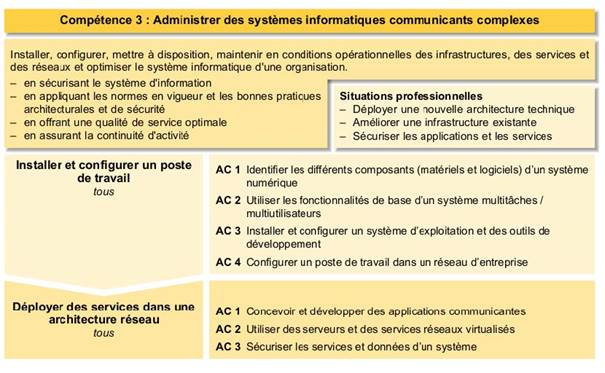
ANNEXE II - Compétence 4 - Gérer des données de l'information
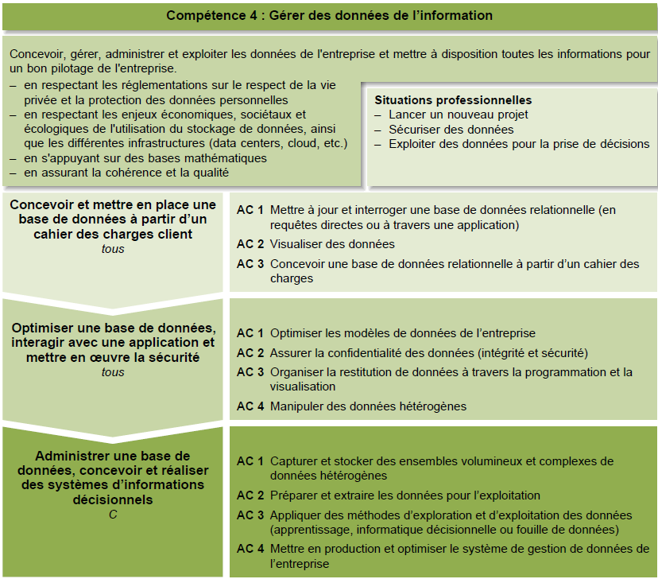
ANNEXE III - Compétence 5 - Conduire un projet
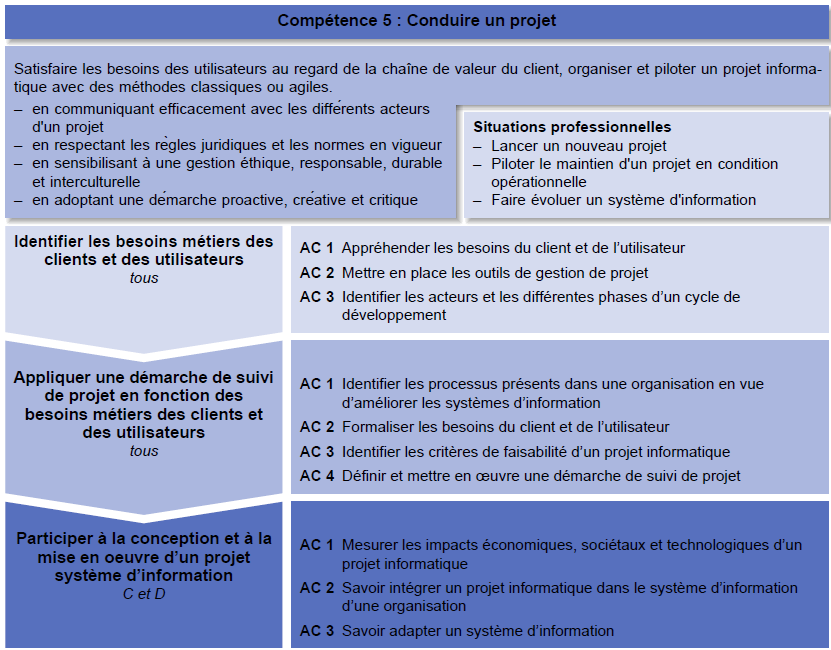
ANNEXE IV - Compétence 6 - Collaborer au sein d'une équipe informatique
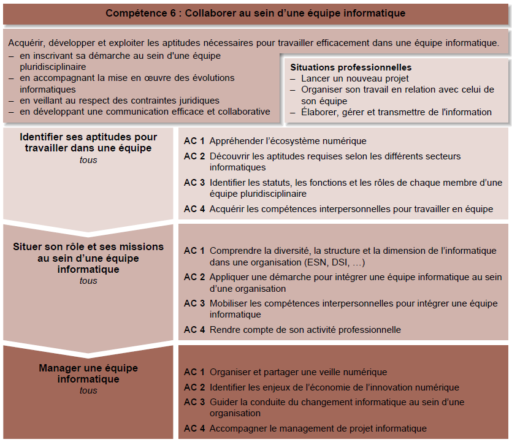